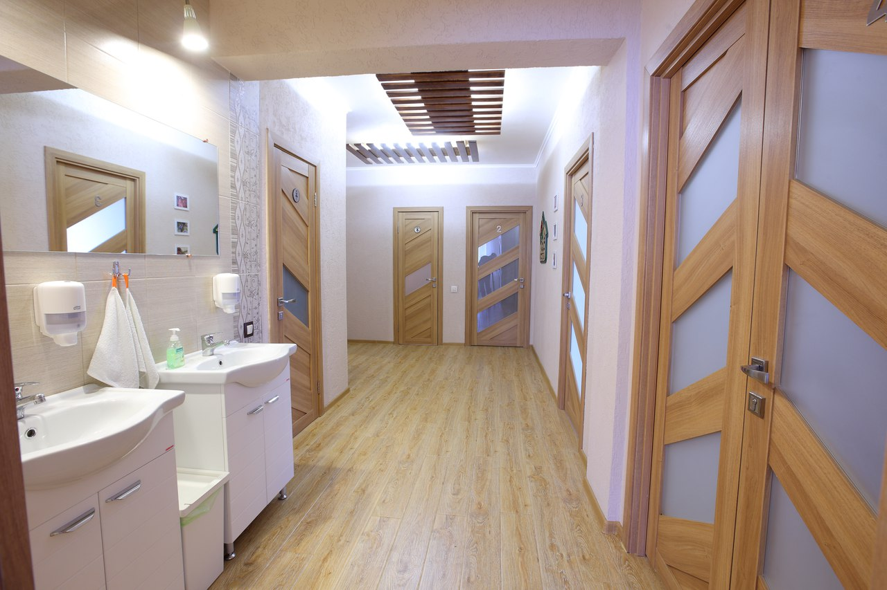
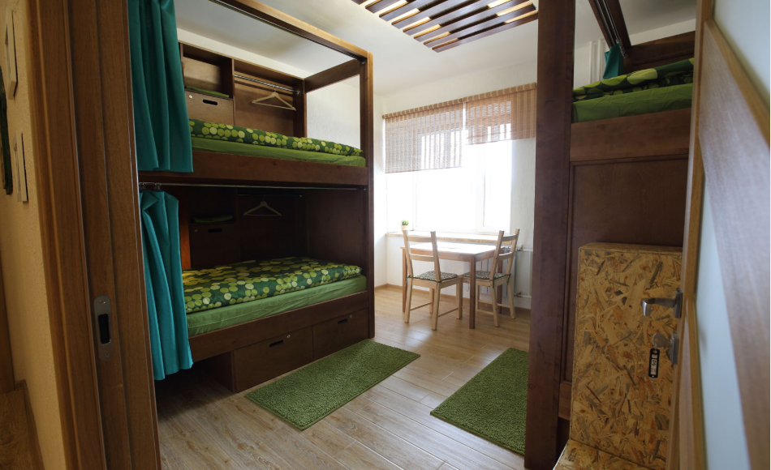
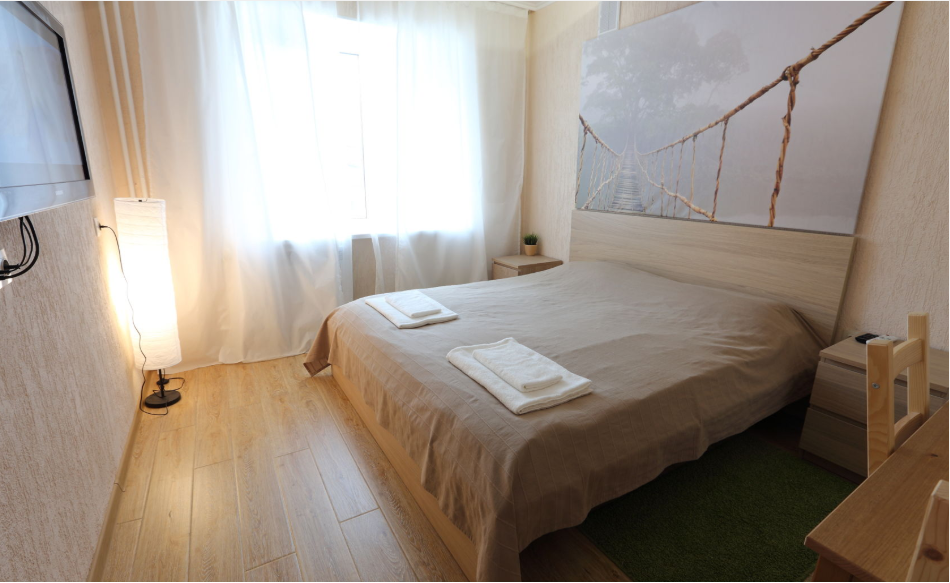

Фото хостела
Фото1

Фото 2

Фото 3
О нас
ЭКО-ХОСТЕЛ
Продуманный комфорт. Отдых в спокойствии. Уют. Чистота. Экологичность
+7 (909) 543 16 23
Преимущества хостела
Мы работаем 24/7
Мы рады Вас видеть в нашем уютном и комфортабельном хостеле в любое время дня и любой день недели
В самом центре
За 5-10 минут пешком можно дойти до ГУМа, ЦУМа, набережной и других популярных мест
Все, что нужно
К Вашим услугам: постельное белье с полотенцем, пользование общей кухней, стиральной машиной, утюгом, феном, компьютером, Wi-Fi
Примеры номеров
Комната для компании
Комната для четырех человек. Две двухуровневые кровати. Эту комнату мы называем еще «семейной». Она может сдаваться и по местам (при отсутствии мест в других комнатах). В комнате есть рабочий стол, зеркало, диванчик и телевизор.
Комната повышенной комфортности
Комната для одного или двух человек. Двуспальная кровать. В комнате есть холодильник, микроволновка, чайник, телевизор. Комната укомплектована раковиной.
Контакты
- +7 (909) 543 16 23
- ecohostel.tomsk@mail.ru
- https://www.facebook.com/ecohosteltomsk/
- https://vk.com/ecohostelvtomske
- https://instagram.com/ecohosteltomsk/
Отзывы
Артём Кужлев
23.10.2019
Прекрасно провёл время. Аккуратные, чистые номера и прекрасные хозяева!
Лана Т.
14.10.2019
Здравствуйте,Фортуна!Останавливались на ночлег по пути домой с 2 мопсами. Приветливый администратор,отличные условия проживания.Если снова будем проездом в Симферополе,то остановимся именно в этом хостеле. Желаем процветания!!! Алексей,Светлана+ питомцы (Москва)
Станислав Г.
25.09.2019
Хороший чистый хостел. Все есть, все на уровне!
Марина
13.09.2019
Плюсы: Всё прошло отлично. Очень рекомендую эту гостиницу. Расположение-тихое, место в 10 мин от вокзала. На территории есть частная парковка. Номера большие с комфортабельной кроватью, ортопедическим матрацом. Завтрак вполне приличный. Хорошее соотношение цены и качества.
Юлия
22.08.2019
ППлюсы: Хороший хостел! Чисто , спокойно . Останавливалась на одну ночь . Встретили с поздним заездом без проблем. Спасибо за все
Elena Shapenkova
21.08.2019
Отличный хостел, мега приятный административный персонал!
Фото мероприятий
Хостел закрывается!
С 1 октября наш хостел перестал принимать гостей в связи жёстким законом, который был недавно принят.Но мы не бросаем наше дело, ближе к зиме мы откроем свой хостел, в замечательном красивом историческом месте Томска, ещё более комфортный, стильный и уютный. Кроватки, которые вы так полюбили, мы выкупим и перевезём в новое место.Очень хотим видеть вас всех снова, наши дорогие гости.Поэтому не отписывайтесь от нас в соц сетях, следите за новостями, нашим ремонтом и открытием. Нам очень нужна ваша поддержка.
До новых встреч. Мы уже скучаем.
Участники марафона «ЯРЧЕ!»
В минувшие выходные в нашем городе состоялось одно из самых масштабных городских мероприятий - международный марафон ЯРЧЕ!И мы вновь немного прикоснулись к этому событию.Ведь у нас в хостеле гостили участники марафона.♂
Гости иностранные
Пока сибирские туристы сидят по домам, за них отдуваются туристы иностранные.😉У нас в хостеле одновременно гостили путешественницы из Тайвани и Малайзии, Англии и турист из Франции.🍜Угощали нас азиатской кухней и русскими пирожными. Много фотографировали наш хостел, гуляли по морозному Томску и остались в восторге.✨
Наш голубь
А вы знали, что на лоджии хостела живёт самый настоящий голубь?🕊Он был спасен зоозащитниками ещё совсем птенцом, только-только покрывшимся пушком, был вылечен и выкормлен людьми.Голубь никогда не жил с другими голубями и не смог приспособиться к улице. Сизарь жил в теплице на даче волонтерки, и мороза бы не выдержал. К сожалению, сам добывать пищу и летать на дальние расстояния Гуля уже не смог научиться.И мы решили приютить беднягу у себя на лоджии.Теперь он радует своим воркованием наших гостей. Особенно по утрам)

Подарки из Казахстана
Вот такие сладкие презенты нам привезли из Казахстана любимые постояльцы🍫 🇰🇿😍Спасибо большое за вашу внимательность и благодарность!
Эту коробку конфет подарил очень приятный и хороший парень Рома, который учится в ТГАСУ, приезжает в Томск на сессию и живёт в нашем хостеле.☺

Пасха с гостями
Светлый праздник Пасхи в нашем хостеле прошел очень тепло и дружно.⭐Вдоволь налакомились куличами, покрасили яйца. Спасибо нашим гостями. И нам